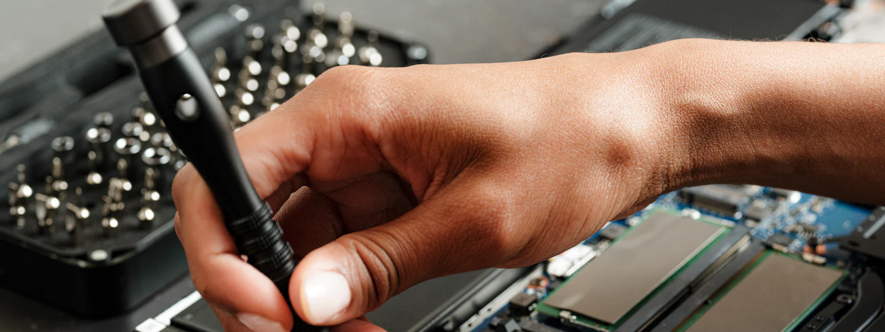
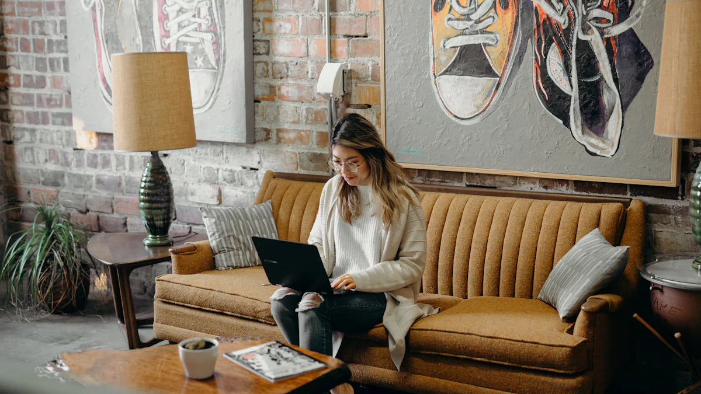

Ordinateur lent ou qui plante
Nettoyage, optimisation du démarrage, remplacement du disque par un SSD, ajout de mémoire : votre PC ou Mac retrouve une seconde jeunesse.
Votre ordinateur rame, vous avez cliqué sur un lien douteux ou votre imprimante refuse de fonctionner ? Un technicien Novazur IT vient chez vous ou se connecte à distance pour tout remettre en ordre, en prenant le temps de vous expliquer.
Du simple réglage à la panne complète, nous intervenons sur tous vos équipements numériques.

Nettoyage, optimisation du démarrage, remplacement du disque par un SSD, ajout de mémoire : votre PC ou Mac retrouve une seconde jeunesse.
Suppression des virus et logiciels indésirables, aide en cas de faux support technique ou de piratage de compte, mise en place d'une protection efficace.
Installation et configuration de votre box, amélioration de la couverture Wi-Fi dans toute la maison, connexion de la TV et des objets connectés.
Installation d'imprimante, scanner, webcam ou disque externe, et configuration de l'impression depuis votre téléphone.
Récupération de photos et documents, mise en place de sauvegardes automatiques pour ne plus jamais perdre vos souvenirs.
Conseils d'achat, mise en service, transfert de vos données, e-mails et contacts depuis votre ancien appareil.
Nous proposons des séances d'accompagnement personnalisées, à votre rythme, pour devenir autonome avec votre ordinateur, votre tablette ou votre smartphone.

Vous n'êtes pas sur place toute l'année ? Nous préparons votre installation avant votre arrivée (box, Wi-Fi, TV, alarme connectée) et intervenons à distance pendant votre absence.
Nous en parler
Idéale pour les problèmes logiciels, les réglages, les virus et les questions rapides. Pas d'attente, pas de frais de déplacement : vous suivez la réparation en direct sur votre écran.
Pour les pannes matérielles, l'installation d'équipements ou si vous préférez la présence d'un technicien. Nous intervenons sur rendez-vous à Nice, Cannes, Antibes et dans tout le 06.
Non, nous venons chez vous ou intervenons à distance. Si une réparation matérielle nécessite un passage en atelier, nous récupérons et rapportons l'appareil.
Oui. Nous n'accédons qu'aux éléments nécessaires à l'intervention, et toujours avec votre accord. Lors d'une télé-assistance, vous voyez tout ce que nous faisons et pouvez couper la connexion à tout moment.
Pas du tout, c'est justement notre métier. Nous prenons le temps d'expliquer simplement et vous laissons, si vous le souhaitez, un petit mémo des manipulations utiles.

Appelez-nous : nous établissons un premier diagnostic gratuit par téléphone.